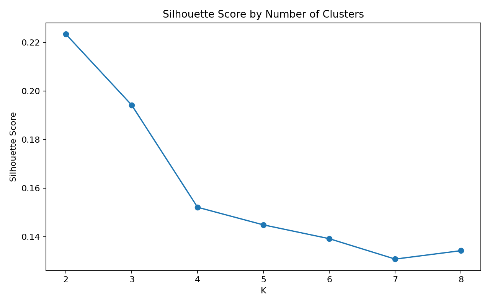
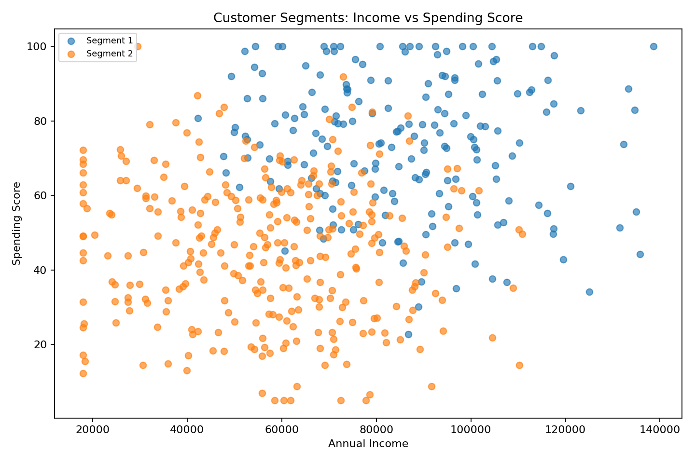
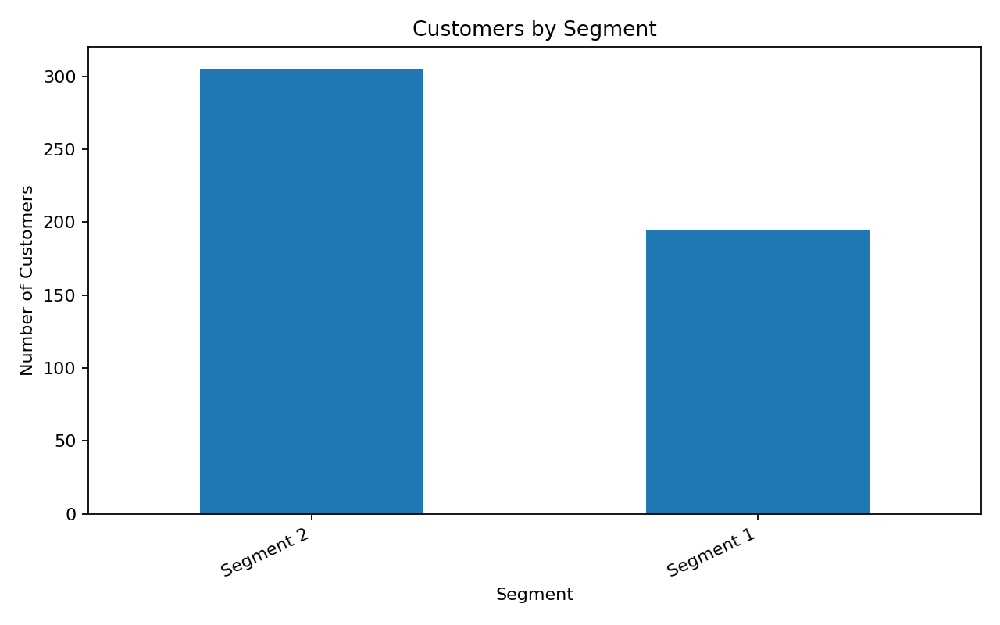

Objective: Segment customers based on behavior and demographics using K-Means clustering.
Businesses often have customers with different spending, purchase and engagement patterns. Segmentation helps create targeted marketing and retention strategies.
K-Means was evaluated from K=2 to K=8 using the silhouette score. The highest score was selected.

| Customers | Avg_Age | Avg_Income | Avg_Spending_Score | Avg_Purchase_Frequency | Avg_Order_Value | Avg_Recency_Days | |
|---|---|---|---|---|---|---|---|
| Segment | |||||||
| Segment 2 | 305 | 35.2 | 57072.8 | 45.2 | 7.5 | 37.2 | 51.6 |
| Segment 1 | 195 | 37.3 | 85923.6 | 73.9 | 12.7 | 58.7 | 25.3 |


This project demonstrates an end-to-end customer analytics workflow: data cleaning, feature scaling, clustering, evaluation, visualization and business recommendations.